Bring the group together.
Bowling, soccer, basketball, and more give friends and family new reasons to use the simulator.
TRUGOLF / MULTISPORT ARCADE
From the first roll to the final goal.
Make your simulator a place the whole group can play.
A NEW WAY TO USE YOUR SIMULATOR
MultiSport ARCADE is a separate, ceiling-mounted sports camera and software system that works alongside any launch monitor. Add it to your simulator to open up a whole collection of interactive sports and arcade games.
Bowling, soccer, basketball, and more give friends and family new reasons to use the simulator.
The ceiling-mounted camera tracks velocity and direction while keeping the playing area open.
Multiple modes and difficulty settings let the group choose how they want to play.
14 GAMES. ONE SHARED SPACE.
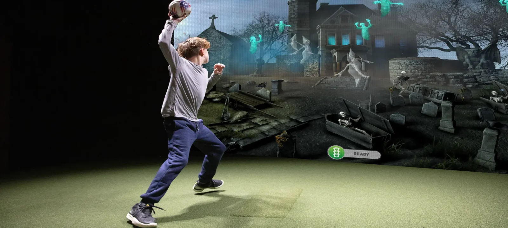
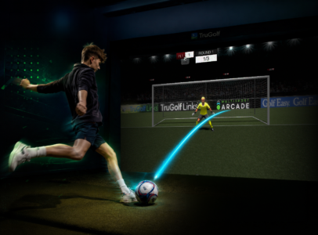
Experience a soccer showdown with TruGolf's Breakaway Soccer. Enjoy 3 different modes of play: Penalty Kick, Target Practice, and Passing Mode.
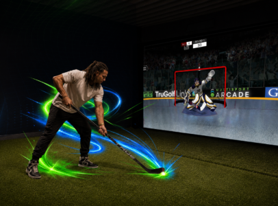
Take on your friends in four thrilling play modes: Goalie, Target Practice, Blackout, and Long Shot. A cool experience from the comfort of your simulator.
Hit it out of the park with Rally Baseball, an exciting spin on a Home Run Derby. Stay immersed in the game with features like Voice-Activated Pitching and Swing-Timing Power Boosts.
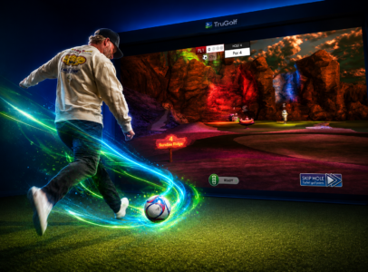
Challenge yourself with 4 unique courses and chase par with an added Shot Boost. In Demolition Mode you can turn up the excitement by blasting away moving targets that explode upon impact.
Fight to survive in TruGolf's Zombie Dodgeball party game. Your journey starts with an exciting kid-friendly Ghost Hunt in a spooky graveyard. Three difficulty levels ensure you get just the right amount of thrills.
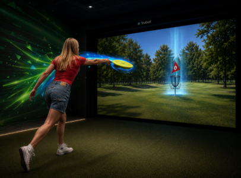
Compete on four specially designed Disc Golf courses from Par 3 Desert Sands to Mystery Island. Turn up the heat in Disc-Struction Mode and take aim at explosive targets! Up to 8 players can join.
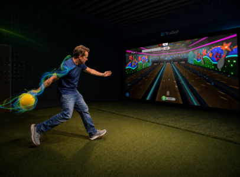
Challenge as many as eight players simultaneously to 10 frames of interactive fun. Vivid sound and lighting effects recreate a classic night out at the lanes.
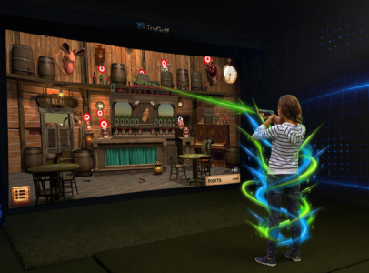
Set them up and knock them down in this Western-themed rail shooter game. Challenge your friends to see whose got the aim of a deadeye. Requires Light Gun.
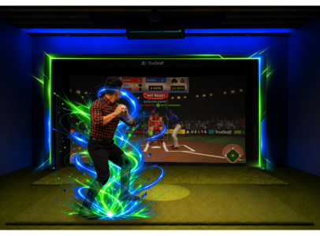
Step onto the mound and start throwing heat in this brand new pitching game from TruGolf. Paint the corners, track, and your pitch speed as you strike out the competition.
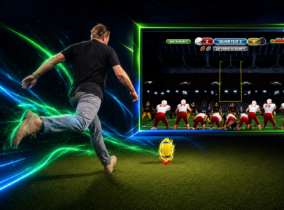
The game is on the line, and you’ve been called in to hit the game winning field goal. Once the ball has been snapped, you have only a few moments to get the field goal off, or you’ll be tackled by the defense.
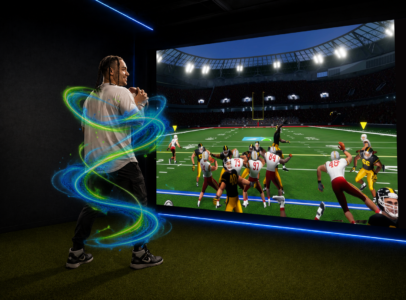
Pick a play, make the read, and complete the pass in this high intensity Quarterback game. Improve decision-making, accuracy, and performance under pressure.
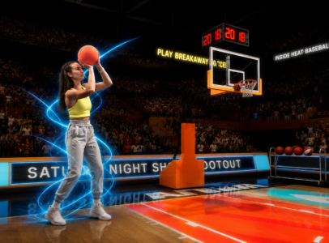
Draw the double team and make the play with this arcade style basketball game that includes 3 unique Modes of Play.
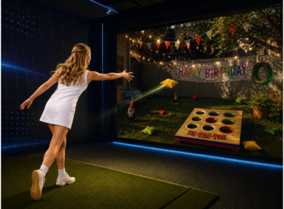
Your favorite backyard game brought to life like you have never seen it before. Complete with Single or MultiPlayer Options, you can choose from Classic Corn Hole, Tic Tac Toe, or 301.
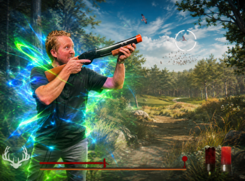
Choose from (2) Unique Modes of play with adjustable difficulty settings: Upland Slam and SKEET. These challenging target games are fun for the whole family.
The system includes the Interactive Sports Camera, light gun, MultiSport ARCADE software key, mounting equipment, USB cable, and power cable. Plan for a minimum eight-foot ceiling. Specialty sports equipment is purchased separately; TruGolf can help confirm your space and accessories.
Find manuals and setup supportMAKE MORE OF YOUR SIMULATOR